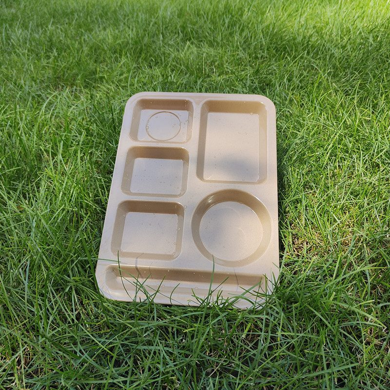
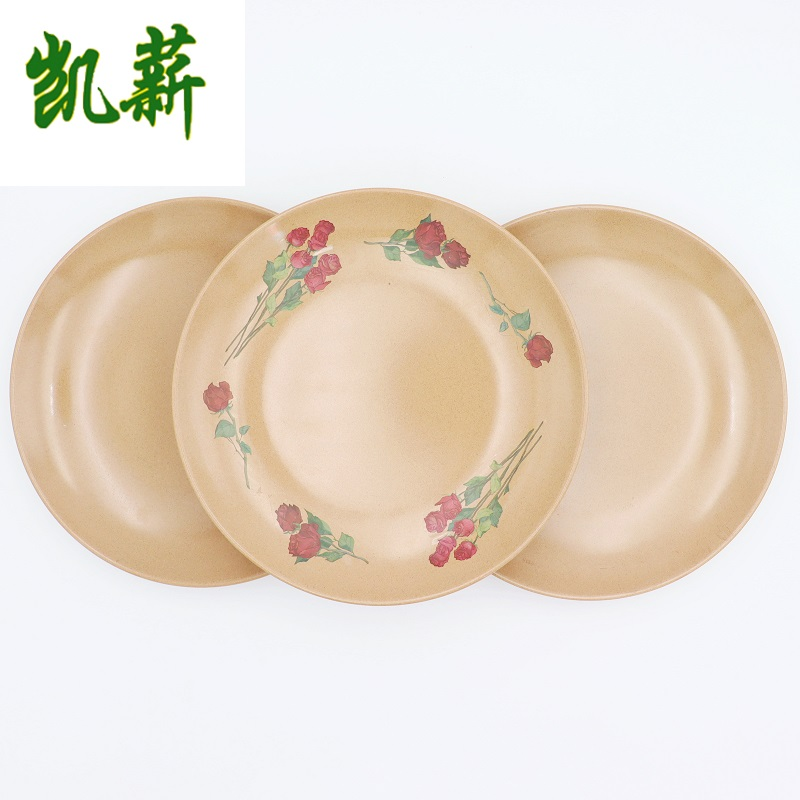

A hotel buys tableware for two reasons that pull in opposite directions: it has to look right in a photograph of the breakfast room, and it has to survive four hundred covers before the first shift change. Rice husk sits in the narrow band where both are true — the finish reads as ceramic, the body takes the wash cycle the way melamine does, and the pieces nest into the racks and shelving you already own. This page covers the buffet case specifically: how to size par stock, what to specify across outlets, what the EU packaging rules actually change, and how a property proves the decision before it replaces a whole breakfast room.

Hotels rarely have one tableware problem. Breakfast is a throughput problem, banqueting is a consistency problem, and in-room dining is a return problem.
| Service point | The real constraint | What we would specify |
|---|---|---|
| Breakfast buffet | Volume in a 90-minute window, then a full wash cycle before the next seating. Breakage shows up as a stock-out on a Sunday, not as a cost line. | Round plates in two sizes, bowls for cereals and fruit, cups for coffee and juice, compartment plates for the set-menu stations. One base color, deep par stock. |
| Banqueting & events | Consistency across 200 covers plated at once, plus storage between events. Mismatched stock is what guests notice. | A single plate size per course, molded logo, and enough trays to move a full room without borrowing from the restaurant. |
| In-room & all-day dining | Pieces leave the kitchen and come back late, sometimes the next morning. | Lunch boxes and lidded bowls for anything that travels; nothing that needs a trolley to return. |
The single most common mistake in a first hotel order is sizing on one seating. The formula that works is boring and it holds.
| Step | Worked example |
|---|---|
| 1. Covers per seating | Say 180 covers at breakfast. Multiply by the number of pieces per cover for that SKU — a breakfast setting might use one plate, one bowl and one cup. |
| 2. Add the wash buffer | You need a second set in the machine while the first is on the table. It is not a doubling; for most properties it settles around 60 to 80% depending on cycle length. |
| 3. Add breakage and loss | A replacement allowance per year. Rice husk chips rather than shatters, and a chipped piece usually finishes its life back of house. |
| 4. Multiply by outlet count | Then decide what is shared. A common base color lets you pool par stock across outlets — that pooling is where a group order saves money. |
| 5. Round to the carton | Cartons are packed to a fixed count. Ordering to a carton multiple avoids paying for a part carton and keeps the warehouse count clean. |
Send us covers per seating, outlets, cycle length and current breakage rate. We will return a par stock proposal with the carton math done, so your F&B manager can argue with numbers instead of guesses.
A lot of hotel groups are being told that the packaging regulation forces them to change breakfast service. The accurate version is narrower, and worth understanding before you brief a procurement team.
Two background pieces if you want the longer version: hotel breakfast in Europe and the UK hospitality rule changes.

| Item | Why it matters at property level |
|---|---|
| One base color | Interchangeable par stock between outlets. A group that runs three colors ends up buying three sets of buffer stock. |
| Logo: molded or printed | Molded for the house brand, printed when outlet identity changes seasonally. Both start at 1,000 pieces per design. |
| Dimension tolerance | If plates must sit in an existing rack or warming cabinet, give the maximum outer dimension and let us work to it. |
| Carton count and weight | Warehouse lifts and storage rooms are the constraint, not the plate. Specify inner packs per carton. |
| Documentation pack | Name the destination market and the documents your compliance team expects, before the order, not after. |
| Question | Answer |
|---|---|
| Will it survive a breakfast buffet? | Yes — and buffet turnover is a par-stock question rather than a material one. Size the order on covers per seating plus a wash buffer, not on replacing breakage as it happens. |
| One range across outlets? | Standard practice for groups: one neutral base color, outlet identity carried by logo or a single accent piece. Pooled par stock is where the savings are. |
| Does it help with EU packaging rules? | Where single-use items are replaced by reusables, those items leave the disposable stream. The cartons you receive are still packaging and we are registered under VerpackG / LUCID. Confirm the interpretation with your own consultant. |
| What documents come with the order? | SGS food contact, LFGB, REACH, MSDS, BPA-free, melamine-free, formaldehyde migration, TUV/CCT and ISO 14001, plus packaging registration on request. See the documentation list. |
| Is it dishwasher safe? | Yes — hand washing, or a standard dishwasher cycle. Send machine type, temperature and detergent and we confirm the protocol for your SKU. |
Send covers per seating, outlet count, wash cycle length and current breakage. We return a par stock proposal with carton math and a sample set.